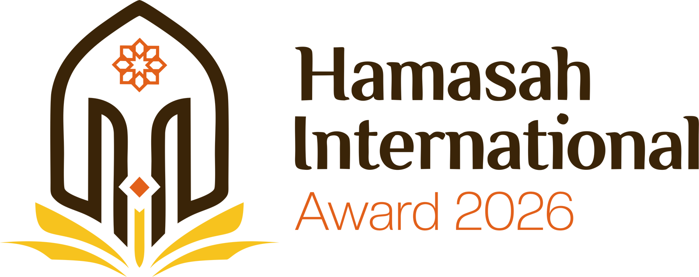
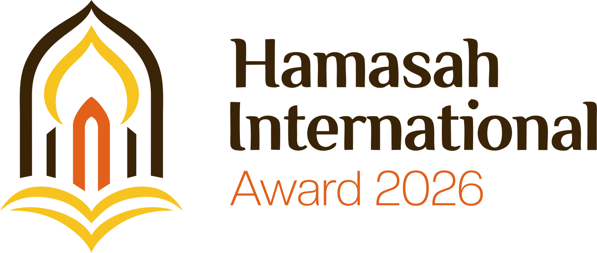
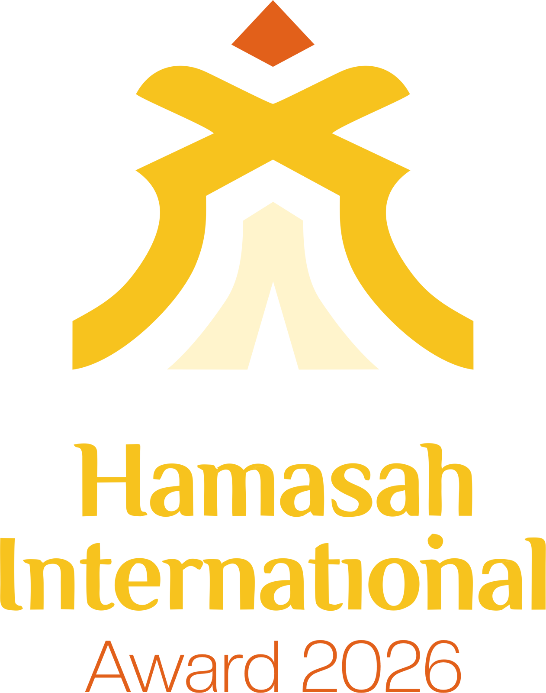
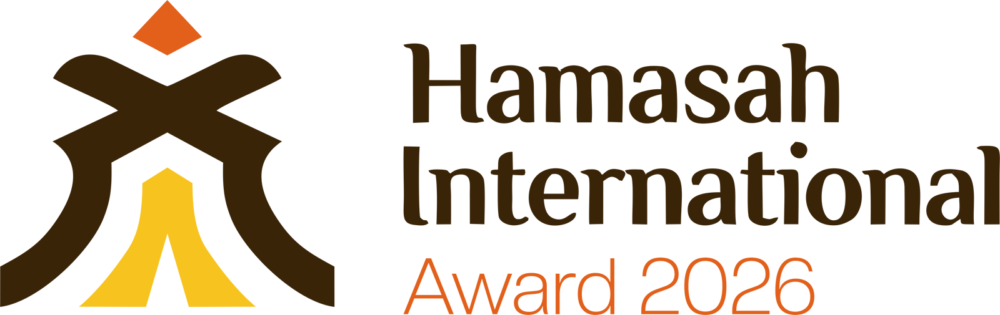

Gerbang Bintang
Yang ini paling khidmat. Ada gerbang lengkung dengan bintang di puncaknya, dan di bawahnya dua pasang sayap yang terbuka seperti buku. Di tengahnya ada satu bentuk yang naik ke atas, itu semangatnya.
Saya pilih iniHamasah artinya semangat, jadi itu yang saya kejar di ketiganya. Tiap logo ada dua susunan, tulisan di bawah dan tulisan di samping.

Yang ini paling khidmat. Ada gerbang lengkung dengan bintang di puncaknya, dan di bawahnya dua pasang sayap yang terbuka seperti buku. Di tengahnya ada satu bentuk yang naik ke atas, itu semangatnya.
Saya pilih ini
Yang ini paling anggun. Kubahnya berlapis, makin ke dalam makin runcing, lalu berdiri di atas buku yang terbuka. Garisnya melengkung semua, jadi rasanya paling lembut dari ketiganya.
Saya pilih ini

Yang ini paling berani. Bentuknya orang yang merentangkan tangan, seperti lagi menerima penghargaan. Paling sedikit detailnya, jadi paling gampang diingat dan tetap jelas kalau dibuat kecil.
Saya pilih ini| Gerbang Bintang | Kubah Terbuka | Sosok Juara | |
|---|---|---|---|
| Kesan | Khidmat dan klasik | Anggun dan lembut | Berani dan modern |
| Yang paling kelihatan | Gerbang dan bintang | Kubah di atas buku | Orang merentangkan tangan |
| Kalau dibuat kecil | Bintangnya mulai nyatu | Cukup jelas | Paling jelas |
| Paling cocok buat | Sertifikat dan plakat | Backdrop dan undangan | Trofi, medsos, dan merchandise |
Kuning jadi warna utama, oranye buat aksen, cokelat tua buat tulisan. Kalau latarnya gelap, cokelatnya saya ganti krem #FFF4CC. Kalau butuh kodenya, tinggal ketuk warnanya.
Pilih satu, pesannya langsung masuk ke WhatsApp saya. Kalau ada yang mau diubah, tulis sekalian di situ.